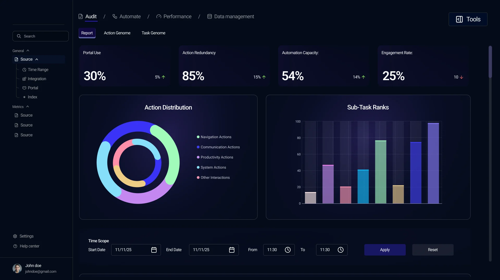
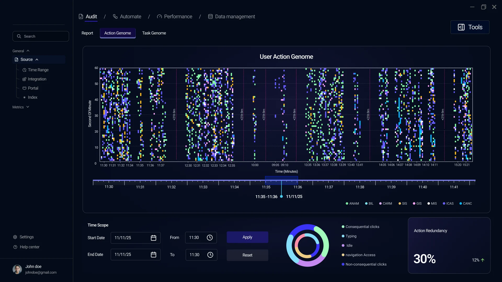
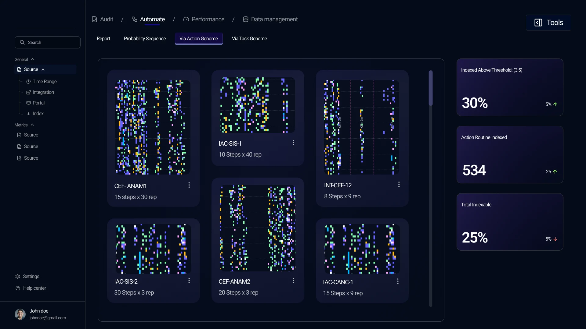

Designed an analysis workspace that turns thousands of machine-read actions into a timeline an analyst can scan.
Sole designer: client needs, UX, UI, visual language
Data visualisation
Interaction design
Visual language
Client-facing
Case study
Designing a visual language for machine-understood behaviour
Enterprise visual intelligence · Data visualisation
NDACompleted under NDA. The client, product names, datasets and interface details have been abstracted or modified for confidentiality.
The workspace
In short
In short
A visual intelligence company had interaction data that machines could read and people couldn't. I led the design end to end and built a colour-coded Behaviour Timeline, so analysts can scan behaviour over time, pick any window and see every view update.
Role
Sole product designer, end to end
Team
Me (design) and one developer
Tools
Figma, [others]
Platform
Analytical web workspace
The problem
How do you show data-dense, machine-driven information to a human?
The product works with machine-read interaction data: individual actions, categories, sequences of tasks and patterns over time. It's data-dense by nature, and the client needed analysts to read it quickly and trust what they saw.
Make it too simple and you lose precision. Show everything and nobody can read it.
Machine-readable vs. human-readable
My role
The only designer, end to end
I gathered the client’s needs, handled client communication and designed the product, the visual language and the interaction model. One developer built the platform, and we worked closely on what could ship.
Constraints
Very dense data
A technical audience
Decision 1
Give the complexity structure, don’t remove it.
I kept the data dense and organised it in three levels: an overview of the whole picture, a view of individual actions over time, and a view of grouped sequences. Stripping detail would have stripped the patterns analysts came for.
Three levels, one set of controls
01 Overview02 Actions over time03 Grouped sequences
01 Overview
02 Actions over time
03 Grouped sequences



01 / 03
Decision 2
A timeline you can scan.
Events sit along a time axis with a selector underneath for choosing a window. Analysts see the whole session, pick a slice and inspect it without losing their place, the way editors work in a video timeline such as Adobe Premiere Pro. One selection filters every view in the workspace.
Decision 3
Colour carries the data, and only the data.
Each kind of action gets its own colour, while purple is reserved for interface states like active tabs and selections. Users can tell what is data and what is interface.
Data colours vs. interface colour
Decision 4
From schematic to parametric.
My first relationship visualisation showed that connections existed but not how they differed. The client asked for a parametric approach, so I made connection thickness follow the strength of the relationship.
The parametric version
Connection thickness follows the strength of each relationship.
The solution
The Behaviour Timeline
Every action is a coloured mark placed by when it happened. You can read bursts of activity, gaps and repeating patterns at a glance, then drill into a window.
Seven parts of one screen
How it reads
How it reads
1Time runs across, and each action is a mark placed by when it happened.
2Colour = category of action, with a legend.
3A range selector underneath chooses the window to inspect.
4The selection filters every view at once, so the whole analysis follows the time window.
5Selected date and time stay visible, so the analyst never loses their place.
6Time controls (start, end, Apply, Reset) work the same everywhere.
7A distribution ring and a KPI card sit beside the plot, so one screen gives both the pattern and the summary.
Takeaway
We didn’t remove complexity. We gave it structure.
 02View work
02View work 04View work
04View work